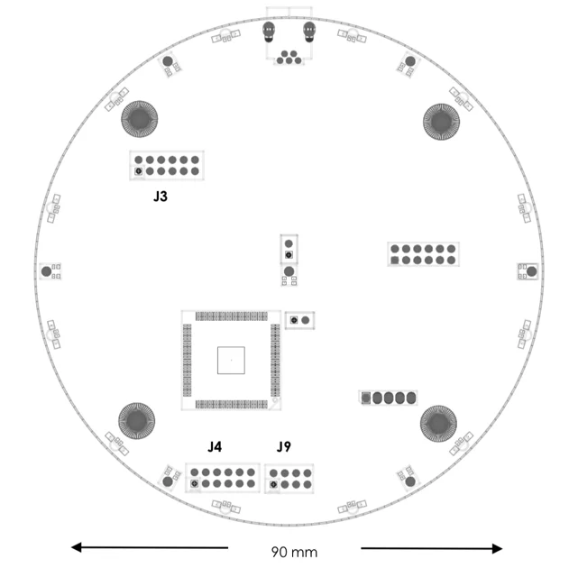
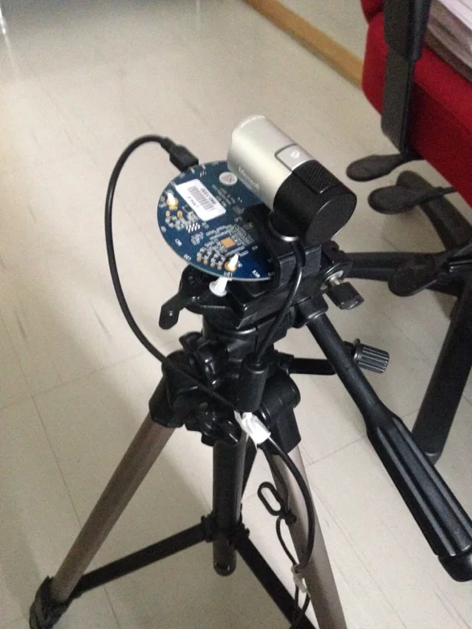
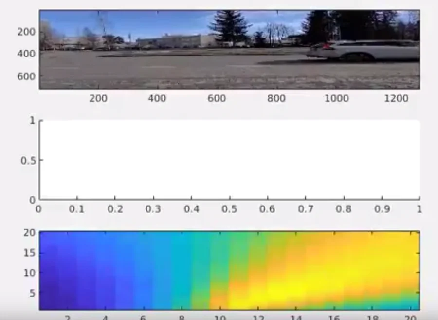
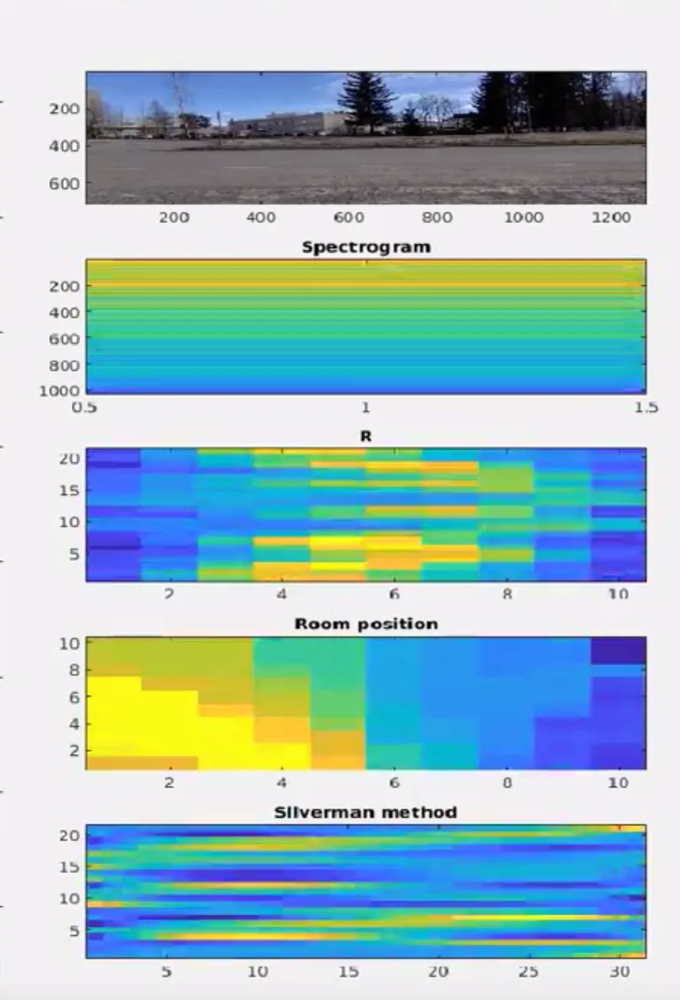

Acoustic Source Localization: Sound Visualization of Moving Vehicles
Jose Maria Perez-Macias
Advanced Audio Processing (Spring 2018) — Audio Research Group, Tampere University
Course Instructor: Prof. Tuomas Virtanen | Project Supervisor: Pasi Pertilä | TA: Sharath Adavanne
Educational Purpose: This page presents an educational introduction to Acoustic Source Localization (ASL) and microphone array beamforming. It explains the physics and signal processing behind how multi-microphone arrays "see" sound, featuring an experimental setup for passive vehicle tracking on Finnish roads.
1. Introduction: How Microphones Can "See" Sound
Acoustic Source Localization (ASL) is the ability to determine the 3D position or Direction of Arrival (DOA, $\theta$) of a sound source in space using acoustic sensors. While conventional cameras rely on reflected photons, acoustic systems rely on mechanical compression waves propagating through the air.
ASL techniques are divided into two main paradigms:
- Active ASL (e.g., Sonar / Echolocation): A probe sound pulse is emitted and the system measures the round-trip delay of returned echoes.
- Passive ASL (Listening): The system emits no sound of its own. It records sounds naturally radiated by target sources (e.g., automobile engine noise, tire-road contact friction, speech, or industrial vibrations) using one or more calibrated microphones.
Passive acoustic localization is particularly valuable in surveillance, robotics, and traffic monitoring because it operates continuously in zero-light conditions, through fog, rain, or glare, and without capturing intrusive optical details of individuals.
Biological Inspiration
Human spatial hearing relies on our two ears (binaural cues) and anatomical filtering by the head and pinna (monaural spectral cues):
- Interaural Time Difference (ITD): A sound arriving from the left reaches the left ear slightly earlier than the right ear (a delay of up to ∼0.65 ms across the head diameter).
- Interaural Level Difference (ILD): High-frequency sounds are shadowed by the head, resulting in higher acoustic intensity in the ear facing the sound source.
By expanding from two human ears to an array of eight or more synchronized microphones, algorithmic systems can calculate relative arrival delays across multiple sensor baselines simultaneously, enabling precise multi-dimensional localization.
2. Hardware Setup & Microphone Array Geometry
For this project, we used the miniDSP UMA-8, an 8-channel USB microphone array designed around low-noise MEMS sensors.

Figure 1: miniDSP UMA-8 layout featuring 7 peripheral MEMS microphones uniformly distributed on a circle (radius 43 mm) plus 1 center microphone.

Figure 2: Outdoor field recording setup at Arvo Ylpön katu, Tampere, with array and camera mounted co-axially on a tripod.
Why a Circular Array Topology?
The spatial layout of microphones dictates the array's directional response:
- Linear Arrays: Microphones placed along a straight line create a conical ambiguity—they cannot distinguish whether a sound originated from the front or the back (180° mirror symmetry).
- Circular Arrays: Distributing microphones symmetrically in a circle breaks directional ambiguity, delivering uniform 360° angular resolution in the horizontal plane without requiring bulky apertures.
The UMA-8 coordinates consist of 7 microphones spaced at 51.43° increments around a 43 mm radius circle, plus a central microphone at origin (0, 0, 0).
3. Mathematical Formulation: How Beamforming Works
3.1 Delay-and-Sum Beamforming & Steered Response Power (SRP)
The fundamental concept behind microphone array localization is steered response power. If an acoustic source is located at candidate position $\mathbf{x}_s$, the wavefront reaches microphone $m$ with a propagation delay $\tau_m$:
$$\tau_m = \frac{\|\mathbf{x}_s - \mathbf{m}_m\|}{c}$$
where $\mathbf{m}_m$ is the 3D position vector of microphone $m$, and $c \approx 343\text{ m/s}$ is the speed of sound in air. By compensating for each relative delay $\delta_m = \tau_m - \tau_0$, we steer the array toward that focal direction:
$$y(t, \delta_1, \dots, \delta_M) = \sum_{m=1}^M x_m(t - \delta_m)$$
When the steering delays match the true source direction, incoming wavefronts across all $M$ channels align constructively in phase, causing the steered output power $P(\boldsymbol{\delta})$ to peak.
3.2 Steered Response Power with Phase Transform (SRP-PHAT)
In outdoor street environments and rooms, echoes and multipath reflections bounce off asphalt, walls, and car bodies. Traditional cross-correlation produces smeared peaks and false detections because loud spectral peaks dominate the summation.
In the frequency domain with array weighting filters $G_m(\omega)$, the beamformer output is $Y(\omega, \delta_1, \dots, \delta_M) = \sum_{m=1}^M G_m(\omega) X_m(\omega) e^{-j\omega \delta_m}$. The total steered response power $P$ across all microphone pairs is:
$$P(\delta_1, \dots, \delta_M) = \sum_{k=1}^M \sum_{l=1}^M \int_{-\infty}^{\infty} \Psi_{kl}(\omega) X_k(\omega) X_l^*(\omega) e^{j\omega \tau_{lk}} d\omega$$
where the Phase Transform (PHAT) weighting function is defined as:
$$\Psi_{kl}^{\text{PHAT}}(\omega) = \frac{1}{|X_k(\omega) X_l^*(\omega)|}$$
Why does PHAT work so well? By discarding spectral magnitude and preserving purely the phase information ($\Phi_{kl}(\omega)$), the cross-correlation approximates an ideal Dirac delta impulse at the true time-delay $\tau_{lk}$. This dramatically suppresses diffuse reverberant energy and sharpens the acoustic focal point.
3.3 Search Space Optimization: Grid Search vs. SRC
Finding the source location requires identifying the candidate position that maximizes the steered response power:
$$\hat{\mathbf{x}}_s = \arg\max_{\mathbf{x}} P(\mathbf{x})$$
- Full Grid Search: Evaluates $P(\mathbf{x})$ across an entire angular grid (e.g., azimuth from $-90^\circ$ to $+90^\circ$). Highly robust, but computationally intensive as the spatial resolution increases.
- Stochastic Region Contraction (SRC): A randomized global optimization method (developed by Do, Silverman, and Yu) that stochastically samples regions with high power and contracts iteratively, reducing computational evaluation time for real-time tracking.
4. Field Experiment: Tracking Moving Vehicles
To evaluate ASL in a real-world scenario, recordings were conducted at Arvo Ylpön katu (bus stop 5146, Tampere, Finland). An 8-channel audio stream sampled at 11 kHz was captured simultaneously with a webcam video feed.

Figure 3: Acoustic energy map (SRP-PHAT) overlaid on webcam frame as a vehicle enters the field of view. The peak contour centers on the car.

Figure 4: Subsequent frame demonstrating real-time acoustic tracking as the vehicle moves across the sensor's field of view.
Acoustic Heatmap Overlay
Figures 3 and 4 show the estimated acoustic direction of arrival mapped directly onto video frames. The primary sound energy radiates from the vehicle's tire-road interface and engine compartment, moving synchronously across the field of view as the vehicle travels along the roadway.

Figure 5: Comparison of estimated acoustic energy trajectories across successive frames during a vehicle pass-by event.
Video Demonstrations
Short video captures showing the acoustic tracking overlay in motion are available on YouTube:
Demonstration Video 1
Single vehicle pass-by tracked with SRP-PHAT acoustic energy overlay.
Watch on YouTube →
Demonstration Video 2
Acoustic source trajectory tracking across field of view at Arvo Ylpön katu.
Watch on YouTube →
Demonstration Video 3
Continuous vehicle tracking and algorithm evaluation comparison.
Watch on YouTube →
5. MATLAB Implementation Example
The following MATLAB snippet illustrates how the UMA-8 array geometry is defined and how relative time delays are computed for any 2D steering angle θ:
% Define miniDSP UMA-8 microphone coordinates (in meters)
% 7 circular microphones (radius = 43 mm) + 1 center microphone
function loc = get_uma8_settings()
% Coordinates in [x; y; z] format
loc = [ 0.0000, 0.0000, 0.0000; % Mic 1: Center
0.0422, 0.0000, 0.0000; % Mic 2: 0 deg
0.0211, -0.0366, 0.0000; % Mic 3: -60 deg
-0.0211, -0.0366, 0.0000; % Mic 4: -120 deg
-0.0422, -0.0000, 0.0000; % Mic 5: 180 deg
-0.0211, 0.0366, 0.0000; % Mic 6: +120 deg
0.0211, 0.0366, 0.0000]; % Mic 7: +60 deg
end
% Compute theoretical Time Difference of Arrival (TDOA) for azimuth theta
function tau = compute_steering_delays(mic_locs, theta_rad, c)
if nargin < 3, c = 343.0; end % Speed of sound in m/s
% Steering unit vector in xy-plane
u = [cos(theta_rad), sin(theta_rad), 0];
% Delay relative to coordinate center (tau_m = -u * mic_pos / c)
tau = -(mic_locs * u') / c;
end
6. Educational Insights & Practical Considerations
- Sampling Frequency & Latency: In this experiment, an 11 kHz sampling rate was selected. Road vehicle noise is dominated by tire-road interaction vibrations (< 2 kHz) and engine harmonics (< 4 kHz). A lower sampling rate dramatically cuts real-time FFT computation without sacrificing localization accuracy.
- Aperture vs. Array Size: The compact UMA-8 array (radius 43 mm) is convenient and portable, but physical baseline limits angular resolution at lower frequencies where acoustic wavelengths ($\lambda \approx 0.34\text{ m}$ at 1 kHz) are larger than the array diameter. Larger distributed arrays improve spatial resolution at the cost of cabling complexity.
- Atmospheric & Weather Factors: Sound speed varies with ambient air temperature: $c \approx 331.3 \sqrt{1 + \frac{T}{273.15}}\text{ m/s}$. For outdoor road monitoring under Nordic climate conditions (ranging from -20°C in winter to +25°C in summer), updating c prevents systematic steering angle bias.
7. Project Resources & Source Code
The complete project source code (MATLAB scripts, signal processing functions, and coordinate utilities) is hosted on GitHub:
jperezmacias/project_advanced_audio on GitHub →
8. References
-
DiBiase, J. H., Silverman, H. F., & Brandstein, M. S. (2001). Robust Localization in Reverberant Rooms. In Microphone Arrays: Signal Processing Techniques and Applications (pp. 157–180). Springer, Berlin, Heidelberg. doi:10.1007/978-3-662-04619-7_8
-
Do, H. T. H. (2007). Real-time SRP-PHAT Source Location Implementations on a Large-aperture Microphone Array. M.Sc. Thesis, Division of Engineering, Brown University.
-
Do, H., Silverman, H. F., & Yu, Y. (2007). A Real-Time SRP-PHAT Source Location Implementation using Stochastic Region Contraction (SRC) on a Large-Aperture Microphone Array. In IEEE ICASSP, vol. 1, pp. I-121–I-124. doi:10.1109/ICASSP.2007.366009
-
Astapov, S., Berdnikova, J., & Preden, J.-S. (2015). A two-stage approach to 2D DOA estimation for a compact circular microphone array. In 2015 International Conference on Informatics, Electronics & Vision (ICIEV), IEEE. doi:10.1109/ICIEV.2015.7333981
-
Hafizovic, I., Nilsen, C.-I. C., & Kjølerbakken, M. (2010). Acoustic tracking of aircraft using a circular microphone array sensor. In 2010 IEEE International Symposium on Phased Array Systems and Technology (pp. 1025–1032). IEEE.
-
Takashima, R., Takiguchi, T., & Ariki, Y. (2010). Monaural sound-source-direction estimation using the acoustic transfer function of a parabolic reflection board. Journal of the Acoustical Society of America, 127(2), 902–908.